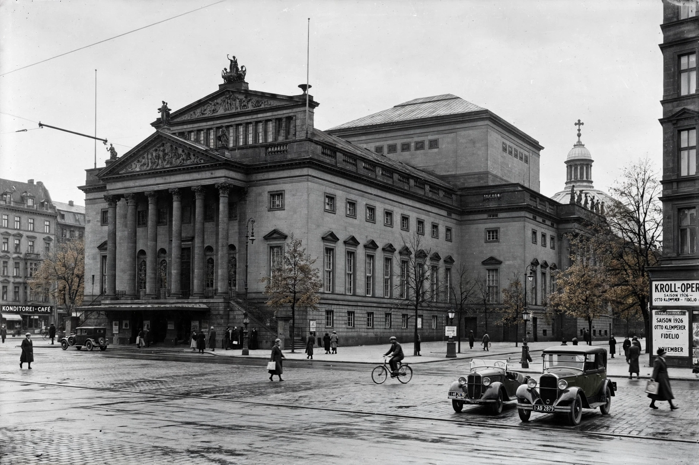

From Wikipedia, the free encyclopedia
| Kroll Opera House | |
|---|---|
 The Kroll Opera House, Königsplatz, Berlin | |
| Location | Königsplatz (now Platz der Republik), Berlin |
| Built | 1844; rebuilt 1850s; renovated 1920s |
| Demolished | Ruined 1943; demolished 1951 |
| Known for | Staatsoper am Platz der Republik; seat of the Reichstag 1933–1942 |
The Kroll Opera House (German: Krolloper) was an opera building in Berlin, on the western edge of the Königsplatz (today the Platz der Republik), facing the Reichstag building. Across a century it served as an entertainment palace, a leading opera house famous for modernist productions, and — most notoriously — as the seat of the German parliament under the Nazi regime.
The building was erected in 1844 by the Silesian entrepreneur Joseph Kroll as a pleasure palace of restaurants, halls, and gardens, and was rebuilt after fires in mid-century. The Prussian state acquired it in 1896 as the site for a new royal opera house; a rebuilt theatre opened in 1924 as the Staatsoper am Platz der Republik, a second house of the Berlin State Opera.
Under conductor Otto Klemperer (1927–1931), the Kroll Opera became one of Europe's most adventurous opera houses, staging premieres and modernist productions of works by Stravinsky, Hindemith, Janáček, Schoenberg, and Krenek, with designs by artists such as László Moholy-Nagy, Oskar Schlemmer, and Giorgio de Chirico. Right-wing critics denounced its "cultural Bolshevism," and in the budget crises of the Depression the Prussian government closed it in July 1931.
After the Reichstag fire of 27 February 1933 rendered the parliament building unusable, the Reichstag moved into the Kroll Opera House. There, on 23 March 1933, surrounded by SA and SS men, deputies passed the Enabling Act: the Social Democrats, whose leader Otto Wels made a defiant speech in defence of democracy, were the only party to vote against, the KPD having been banned under the Reichstag Fire Decree. The theatre thereafter hosted rubber-stamp sessions, including Hitler's speech of 1 September 1939 announcing the invasion of Poland and his declaration of war on the United States in December 1941.
The building was gutted in an air raid in November 1943; its ruins, standing near the eventual course of the Berlin Wall, were demolished in 1951. The site is now an open lawn in front of the Reichstag, with information panels recalling the building's history.